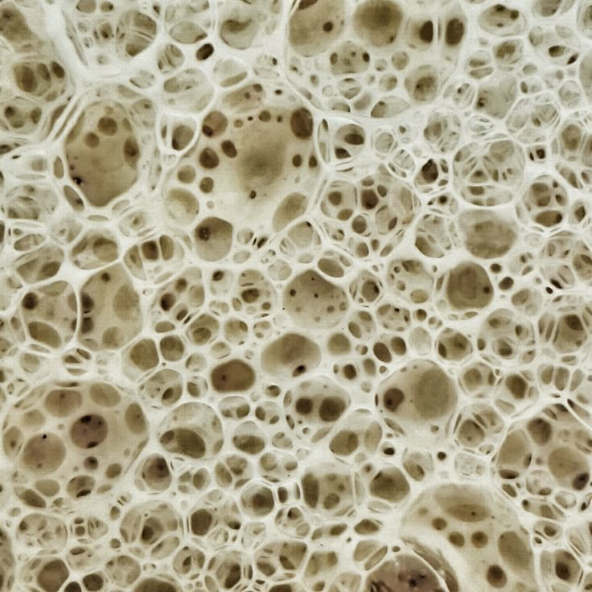
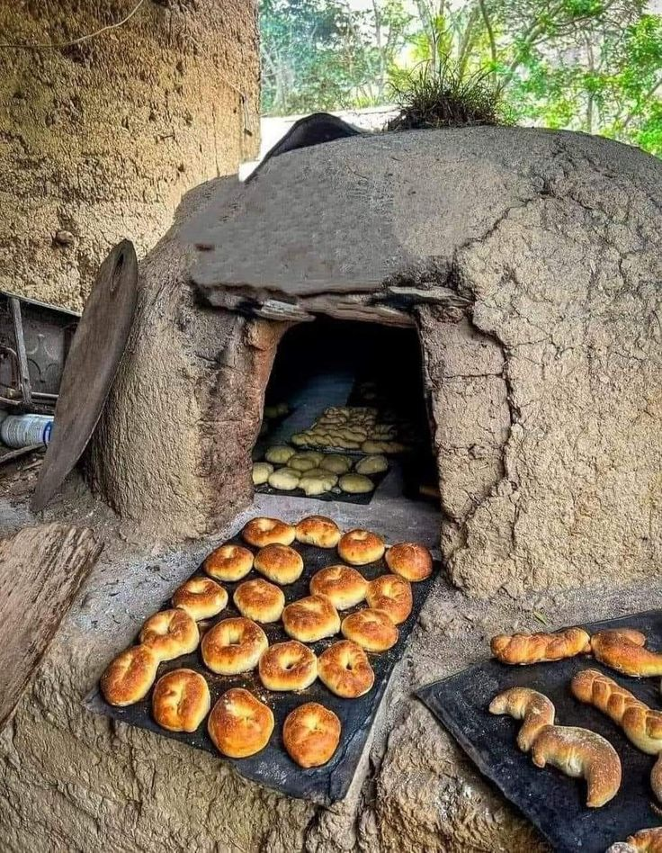
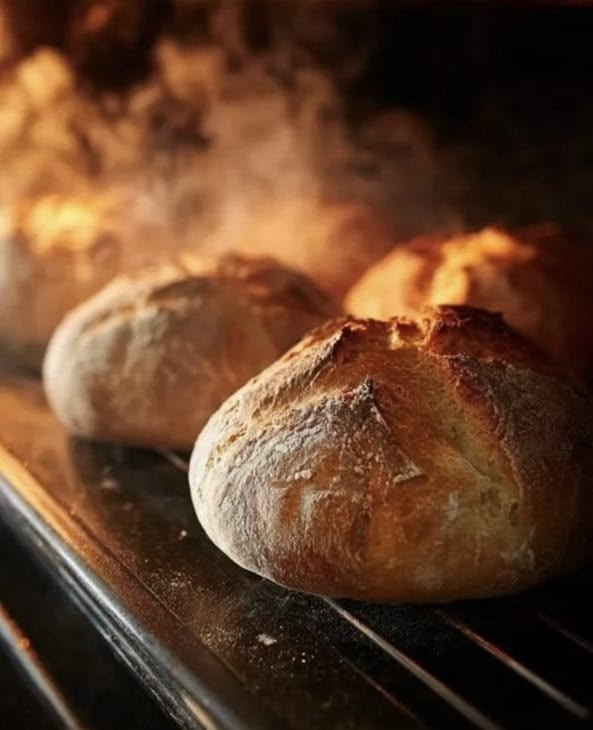
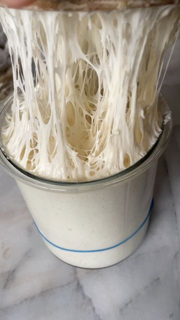
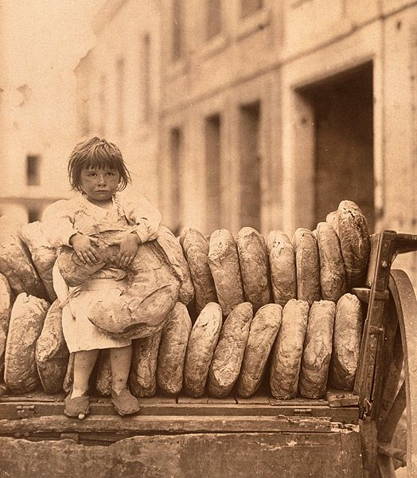
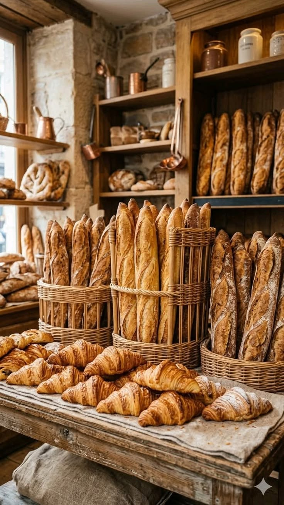

Idade
Existem evidências de que o pão já era produzido há milhares de anos, muito antes do surgimento de padaria, tanto antigas quanto modernas.

Fermentação
As leveduras consomem açúcares e liberam o gás carbônico, formando pequenas bolhas que deixam o pão fofinho, e o fazem aumentar de tamanho.

Tipos
Existem muitos tipos de pão, alguns são: a baguete, pão francês, ciabatta, brioche, pão integral, pão de centeio e muitos outros.

Pão Francês
Apesar do nome, o pãozinho popular no Brasil foi desenvolvido por aqui e somente inspirado em pães franceses.

Aroma
Durante o forno acontecem diversas reações químicas, principalmente a reação de Maillard, responsável por parte do aroma, sabor e cor da casca.

Tradições
Cada região tem suas tradições: ingredientes e técnicas locais fazem com que diferentes lugares desenvolvam pães com sabores e características próprias.

Água
O pão recebe diferentes texturas a partir da quantidade de água colocada na massa.

Política
O pão também esteve ligado a acontecimentos históricos e políticos, como a Revolução Francesa, quando a falta de alimentos e a escassez de pão contribuíram para revoltas populares.

Dias atuais
O pão é um dos alimentos mais consumidos no mundo, presente em diversas culturas e feito de várias formas.
